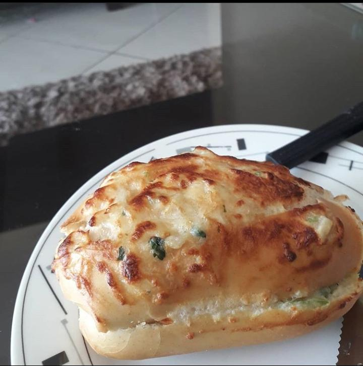

Esportes
Durante muito tempo da minha vida pratiquei vôlei de quadra, vôlei de praia e handebol, mas parei há cerca de 2 anos por conta de um problema de respiração que me impede de realizar atividades físicas intensas e falta de tempo para conciliar as atividades. Cheguei a conquistar diversas medalhas no vôlei de quadra e de praia, mas foi no handebol que fui mais vitorioso, sendo campeão do meu estado (Sergipe), e representando-o no campeonato brasileiro escolar, no qual conquistei a 4° colocação
O esporte foi muito importante para mim, pois foi através dele que construí muitos dos valores que possuo, entre eles companheirismo e responsabilidade, além de colecionar diversas amizades pelo caminho. Era na quadra, sentindo o nervosismo e a pressão do jogo que eu me sentia realizado.
Gastronomia
Desde criança sempre gostei de cozinhar, tentava sempre que possível experimentar receitas novas, e era até mesmo uma maneira de inovar, fugir um pouco da rotina alimentar de casa, além de aproximar mais a família, criando uma espécie de "cultura", na qual todo domingo eu realizava um prato novo no almoço ou fazia um churrasco.
Até que, há pouco tempo atrás decidi criar uma página no instagram onde posto alguns dos pratos que faço, é uma maneira de me motivar a continuar inovando e treinando, para melhorar. Deixo alguns dos pratos que costumo fazer, nada muito elaborado:

Segue lá pra me dar uma moral: :) @gastronomia_por_hobby